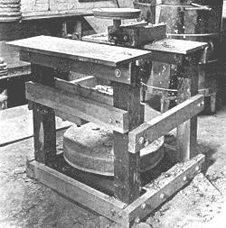
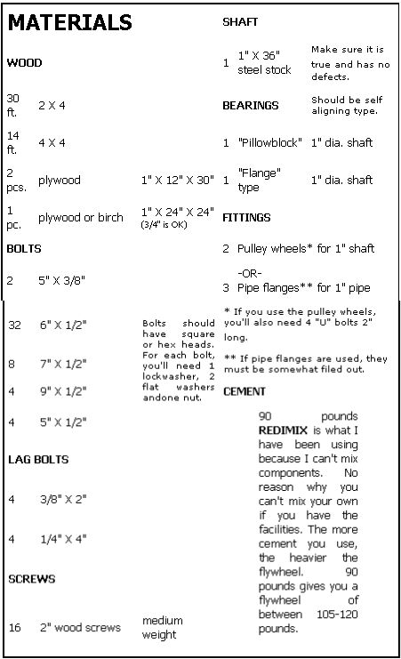
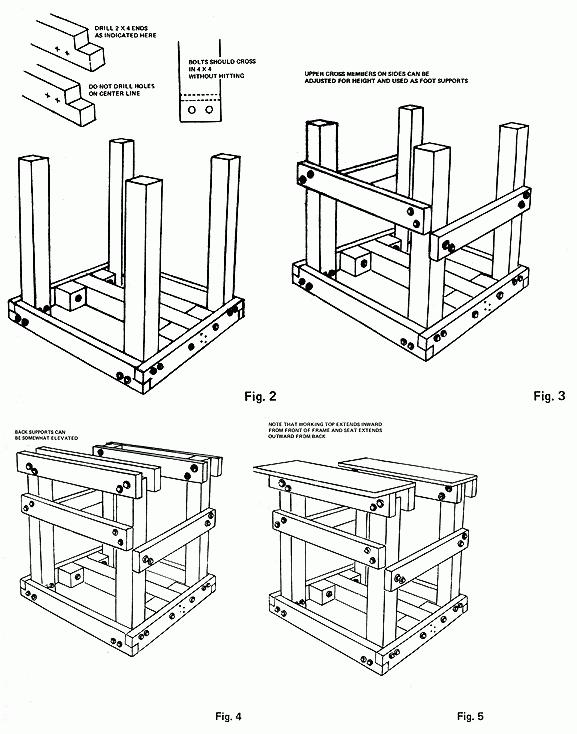
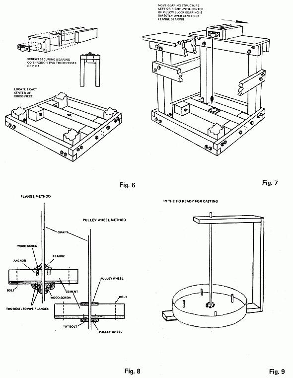

Pottery, like other fields of art (and life in general), has not been immune from the rising tide of price increases. It seems clear to me that fewer and fewer people will be willing or able to shell out increasingly large sums of money on artistic interests in the future. Other methods of procuring necessary materials and tools must be found.
The plans that follow are for a kick type potter's wheel which costs under sixty dollars, depending upon availability of necessary parts. The wheel is an exceptionally fine piece of equipment: Very reliable, fairly cheap and easy to build. The rich satisfaction you'll get from throwing pottery on a wheel you've built yourself is an added bonus.
For sake of simplicity, I'll divide these building instructions into three main sections: (1) construction of the frame, (2) casting of the flywheel and securing it to the shaft and (3) aligning the bearings. You'll find a list of necessary materials included here, too.
My best advice is to amass all materials before you start building. It's kind of a drag having to break the construction routine to buy some parts. Let's build.
Essentially the frame is a 30-inch cube, with 4-by-4 uprights and 2-by-4 cross members. See Fig. 1 in the Image Gallery.
It's best to cut the wood into 30-inch pieces before you start. The best bit for the drilling job is a 5/8-inch wood bit. It works nice. A suggested layout for the holes is shown in Fig. 2 (see Image Gallery).
The finished bottom frame of 2-by-4s must have a true face (so the wheel will set level) so assemble it on a flat surface. Then the 4-by-4 uprights can be placed in the corners and checked for 90-degree right angles before the holes are marked for drilling. Use the 6-inch bolts - plus washers, lock washers and nuts - to secure the 4-by-4s to the bottom frame.
In the diagram I show another 4-by-4 in the middle of the frame. This piece supports the flywheel and flange bearing. It is held in place with long nails and made rigid by four blocks of 4-by-4 bolted in place with 6-inch bolts. You should now have a structure which looks like Fig. 2 (see Image Gallery).
Now the upper cross members are added. You'll need 3 pieces of 2-by-4, 28 3/4-inches long, if the bottom frame was constructed properly. If this is your first shop project, you may find it easier to rough-cut the three 2-by-4s about 30 inches long and trim them to fit on assembly. Two of the three will serve as foot supports while you're making pots and their height should be adjusted to fit the individual potter. I located mine about 15 inches above the bottom frame because I like to rest my elbows on my thighs as I throw. All three pieces are secured with 6-by-1/2-inch bolts. See Fig. 3 in the Image Gallery.
The next stage is putting on the supports for the seat, working table and top bearing. You'll need 4 pieces of 2-by-4, each 30 inches long. When putting on these supports, make sure they are as level as possible, relative to the bottom frame. (If you lined up the bottom frame and trued the 4-by-4 uprights, you should have no problem. Use a level and square.) These pieces are secured to the front and back of the frame on both sides of the uprights with the 7-by-1/2-inch bolts. See Fig. 4 in the Image Gallery.
Check periodically for level as you add these pieces. If you like a higher seat, relative to the throwing head, elevate the back two supports somewhat. This is subject to the whims of the individual potter.
Two pieces of plywood, 1-by-12-by-30 inches, will be the seat and the working table. They are secured to their 2-by-4 supports with eight 2-inch wood screws. See Fig. 5 in the Image Gallery.
Note how the working top extends inward from the outside edge to the middle of the frame and the seat extends outward from the back of the frame. I've found this to be the best arrangement.
Fabricating the support for the top pillow block bearing is the last step of frame construction. Work very carefully and precisely here and you won't have any trouble when you later level the shaft.
Before the top bearing support is constructed, you should mount the flange bearing in position on the 4-by-4 crosspiece of the bottom frame. Locate the exact middle, which should be 15 inches from either side. Predrill the holes with a 1/4 or 5/16-inch bit and use the 3/8-inch lag bolts to secure the bearing firmly to the 4-by-4. Now fabricate the pillow block bearing support out of 2-by-4s as shown in Fig. 6 (see Image Gallery).
Note that the screws securing the bearing go through two pieces of 2-by-4. This whole unit must be strong, so take care that you don't split the wood when putting in the lags. Predrill the holes first with a 3/16-inch bit. Also, the ends of pieces No. 2 and 3 (against which the side of piece No. 1 butts) must be cut square.
Now, locate the center of the working top (15 inches in from both ends) and mark it with a pencil. Center the bearing structure (left-right) on this mark. Then drop a plumb-bob through the inside of the top bearing and suspend it as nearly as possible in the exact center of the bearing. (It may help to lay a nail across the opening to let the string slide over.) Let the plumb-bob down and by moving the whole upper bearing support structure, locate the center of the bottom bearing.
What you want is to position the top bearing directly over the lower bearing so that the shaft - when inserted through the bearings - will be (ideally) exactly vertical, or plumb. See Fig. 7 in the Image Gallery.
With a pencil, mark the position of the bearing support structure. There might be some wood extending over the front edge of the working top, so mark the structure underneath for reference, later to be cut off. Drill 4 holes (2 in each) in pieces 2 and 3 so that they will coincide with the supports for the working top. Mark this location on the top, and then drill through the top into the 2-by-4s. Or, you can clamp the sup port structure to the top and its supports with a large C-clamp and drill directly through all the components at once. Use the 9-by-1/2-inch bolts to secure the bearing support structure to the frame.
For the Pulley Wheel Method:
Locate the exact center of the 24-by-24-inch plywood or birch piece. With a pencil and piece of string used as a compass inscribe a 23-inch circle. Cut it out and in the center of the disc drill a 1-inch diameter hole. Again, make this hole as nearly perpendicular as you possibly can.
If you have access to an arc welder the next step will be easier: Two inches from the bottom of the shaft, weld on the pulley, as perpendicular as possible. The more nearly perpendicular, the more nearly true your wheel will run. If you don't have an arc welder or access to one, use epoxy two-part glue and let it harden at least 24 hours.
The plywood disc is then secured to the shaft and pulley wheel with the four 2-inch V-bolts as shown in Fig. 8 (see Image Gallery). The legs of the V-bolts go through the spokes of the pulley wheel, through the disc and are secured with lock washers and nuts. Use the lock washers, as there will soon be cement cast around the nuts and you won't be able to tighten them once the cement is there.
Now comes the tricky part of casting the flywheel. First, drill four 5/8-inch holes in the disc, one in each quadrant. Secure some tar paper and make a mold about 7 inches tall around the disc. You'll probably have to tack it into the edge of the disc. Cut four 12-inch long sections of 5/8-inch dowel and place them in the already-drilled holes in the disc.
Before you pour the cement, you might set up a jig to hold the shaft and disc assembly plumb. This applies to either method (pulley wheel or pipe flange) of fastening the cement flywheel to the shaft. Make sure the assembly is rigidly supported, mix the cement and pour about 4 to 5 inches of the mix into the mold. The dowel sticks will soon be replaced by 5-inch bolts.
Make sure the cement is poured evenly and that no side is higher than another. Also, the cement should be poured closely around the shaft in the center so that the shaft can't wobble. Slide the top pulley wheel down over the shaft and imbed it - right up to the top of the pulley section - in the cement. As the mix dries, tighten this top pulley's set screw into the vertical shaft and epoxy the set screw. Once the cement is dry and cured you can also epoxy the pulley wheel to the cement for added strength.
As the cement begins to harden, move the dowels up and down to free them. As it gets harder yet - and finally sets up - replace the sticks with 5-by-1/2-inch bolts.
Let the cement cure before attempting to move it. This will take a day or two. Don't try to rush it.
For the Flange Method:
If you can't get pulley wheels you can use pipe flanges to secure the flywheel to the shaft.
It's more than likely you'll have to file out the threads on the inside of the flanges. Then, in the same way you secured the bottom pulley wheel, weld or epoxy two pipe flanges (one nestled inside the other) 2 inches from the bottom end of the shaft. Again, make sure the flanges are as nearly perpendicular to the shaft as possible. See Fig. 8 in the Image Gallery.
After it has dried - if epoxy is used - attach the pipe flanges to the 23-inch disc with wood screws and epoxy the outside of the outer flange to the wood. In fact, even if you were able to weld the flanges, use the epoxy here. The finished unit must be rigid.
Drill the four 5/8-inch holes in the 23-inch disc, as described for the pulley wheel method, and attach the 7-inch high tar paper mold around the edge of the disc. Cut the four 12-inch long sections of 5/8-inch dowel, place them in the 5/8-inch holes, rigidly support the shaft-disc assembly with the shaft (ideally) absolutely vertical and pour in the 4 to 5 inches of cement. As the cement hardens, replace the 5/8-inch dowels with the 1/2-inch bolts.
OK. Here's the major difference between the pulley wheel and flange methods of attaching the flywheel to the shaft: Whereas the top pulley wheel was embedded right in the cement, the top flange rests on the cement and is fastened to it with screws and concrete anchors.
Here's how you do it: When the cement is absolutely dry, slide the top flange down over the shaft, let it rest on the cement and mark on the concrete the position of the holes in the flange's flared tip. Depending on the brand of the flange, there will probably be either three or four of these holes.
Slide the flange up off the shaft and, using a masonry bit, drill holes in the cement to accept plastic or lead anchors. Place epoxy in the holes, insert the anchors, slide the flange down the shaft into place and insert some flat head wood screws 2 inches long. The holes in the concrete must be more than 2 inches deep for this method.
Naturally, you'll have made sure the diameter of the screws, the size of the anchors and the diameter of the masonry bit all match properly. The clerk at the hardware store can help you if this is your first experience with concrete anchors. Actually, they're quite easy to use if you have the right size for the job.
A word of advice: Now is the time to locate the wheel where you want it because, once the flywheel is in place, this is a heavy unit to move. When you have the frame positioned, check it for level and shim under the corners if necessary.
You may have to remove the seat from the frame to get the flywheel in. Maybe not. In any case, remove the top pillow block bearing, lift (careful!) the flywheel unit and gently place it inside the wheel frame. Rest.
If you can get a small (about 3/8-inch) steel ball, grease it and place it in the bearing cup of the bottom flange bearing to absorb some thrust. If you can't find one, no sweat. It's not at all necessary (the bearing will take the thrust) but do make certain that the bottom of the shaft does not rest on the wooden 4-by-4. If it does, either cut off the end of the shaft or relieve a spot of the 4-by-4 directly under the center of the flange bearing.
Now lift the flywheel unit and place it in the bottom flange bearing (phew!). Tighten the set screw. The bearings are self-aligning, which means you'll only have to check for 90-degree plumb with a plumb-bob.
Slide its upper pillow block bearing down the shaft, secure it in place on the bearing support structure and tighten its set screw. Use the plumb-bob to check alignment of the shaft. If necessary, you'll probably be able to loosen the lag screws that hold the top bearing in place and slide it slightly left or right as needed.
Your wheel is now complete, save for the wheel head. Shellac the frame and let it dry.
The wheel head is a hassle. American Art Clay Co. sells a few, but they're expensive. American Art has two kinds: A flat circular metal disc and a recessed head, which accepts plaster bats.
The recessed heads are nice. When you finish a pot - instead of cutting it off or waiting around for it to dry - you just lift the plaster bat, pot and all, off and go right on. I dug up the bread for one of these.
If you do buy from American Art, specify that you want a head for a 1-inch diameter shaft. Most of their heads are for a standard 5/8-inch shaft but they'll bore one out for you. The company also sells a mold for the plaster bats.
Your wheel is now finished. It's rugged, and will need little or no maintenance other than an occasional tightening of a bolt. The Sealmaster or Timken sealed bearings never need lubrication. If you happen to use unsealed bearings you might have to add a couple of drops of oil to each one once or twice a year. One don't: Never step directly on the flywheel. You'll weaken its supports and it may then someday spin out.
I've built two versions of this wheel - one somewhat more elaborate - and both are excellent tools. They've given many people, myself included, great joy. I extend special thanks to Don Mauros, to whom I apprenticed in 1968 and who taught me to build a potter's wheel.
|
 MOTHER EARTH NEWS STAFF Figure 1. The frame is a 30-inch cube, with 4-by-4 uprights and 2-by-4 cross members. |
 MOTHER EARTH NEWS STAFF The materials list. The bes approach is to amass all materials before you start building. It's kind of a drag having to break the construction routine to buy some parts. |
 MOTHER EARTH NEWS STAFF Figures 1 through 5, on constructing the kick-wheel frame. |
|
 MOTHER EARTH NEWS STAFF Figures 6 through 8: finishing the frame construction, casting the flywheel and securing it to the shaft. |
|
|